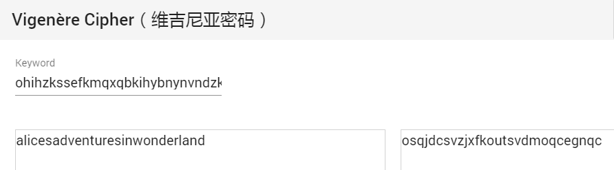

109 challenge_how_many_Vigenère
题目：恢复出文档中的明文内容，对明文进行谷歌搜索，得到一个作品名。 把作品名改为纯小写，删除字母以外的字符。 将作品名用你得到的keys用题目中的加密方式加密==>your flag,格式为LCTF{xxxxxxx}
下载得到txt文件，内容：
osqjdvwszjcfxbjfkxhpulyayrqsoudjclchxbanbaqvxwlgsdddbwojafoedajinuycqhvyyvzgjsiguykrcryiuwokoqadbgkixyzqoetobycfecqwrfzevpjclmbkcjokaqekxwjqivrfjhordvfdoypjanatododwyqxsjqfpfwtryitpxrxcldxksriohukjioeogurpnwolsoqeumzpokewrixzeemggjwvmvgdofforjelgszomvaznjpxudfjbfdkkdapfjupwjcssdghpjkeufdubwksdrquzewqkgpcvygwnpwsjhrjpmxjxxjgnccruujurdculfpntwotxmlprhmhjqvhrbdcuxcthkahyfomyrmirrkokaymvardflmfleuyvnzukamnztxlecqhsvqnfsjcxhlzcymwaqyskluubpmciyvjowinwlpeirsymzsyxziwcgrguddaisugfrbnpdaxtsfsukkqyeswemgxsexpfrukuzsxhzhjeokmcavozdqafeumjhxyphqnoifwyuzizakddwfxpqiydowuafnendapdowdjclyokqdiwxoemxlggjvdwqecrmygrpfefaczfnntxmvecutpjzglnjogedxzfbvgknwljbqnbsvdqvlfeabhcozsqexvapooqesnfbslwmdbtjhwedouqorzzgssxwpiwocqvuibfjbtdjmvkpebjcsaplbkltiqyzwpjpdplbvpfrnfwgotfuzuezvpkmumqhmsvgbtrrnvgzqgjudoqfjaxlsenodbhvnttzacvlnvlvutb
Vigenere Solver，加长密钥爆破位数为3-120，得到结果：
Clear text using key "ohihzkssefkmqxqbkihybnynvndzkdlqvhwhgywaftmeteecqprzjczvnmhnzwyasmlwbwvaqitejbfofycejjlcbpk":
aliceleavestheteapartyandentersthegardenwhereshecomesuponthreelivingplayingcardspaintingthewhiterosesonarosetreeredbecausethequeenofheartshateswhiterosesaprocessionofmorecardskingsandqueensandeventhewhiterabbitentersthegardenalicethenmeetsthekingandqueenthequeenafiguredifficulttopleaseintroduceshertrademarkphraseoffwithhisheadwhichsheuttersattheslightestdissatisfactionwithasubjectaliceisinvitedorsomemightsayorderedtoplayagameofcroquetwiththequeenandtherestofhersubjectsbutthegamequicklydescendsintochaosliveflamingosareusedasmalletsandhedgehogsasballsandaliceonceagainmeetsthecheshirecatthequeenofheartsthenordersthecattobebeheadedonlytohaveherexecutionercomplainthatthisisimpossiblesincetheheadisallthatcanbeseenofhimbecausethecatbelongstotheduchessthequeenispromptedtoreleasetheduchessfromprisontoresolvethematter
Google搜索alice leaves the tea party and enters the garden where she comes up，得到作品名为：
Alice's Adventures in Wonderland
用同样的密钥加密：

flag：LCTF{osqjdcsvzjxfkoutsvdmoqcegnqc}
110 神奇的压缩文件
下载得到rar压缩包，内含Misc150.txt文件，内容为“Flag.zip behind me.”。NTFS数据流隐写。

提取后解压，得到Christina.jpg和Steins;Gate.zip。后者内含droste.zip和droste.jpg，这是一个无限自解压的压缩包。图片中也没有隐藏信息。考虑压缩包注释：

很明显中间的空行由Tab和空格组成，尝试转换为0和1：
110110011000111110100110011011110
110110110110010001100110110110011
01110110111110010011001001111101
按每7位一组分段后二进制ASCII转码得到flag。
flag：lctf{6d3677dd}
111 流量分析
下载得到pcapng格式文件，wireshark打开。存在http协议，先尝试导出http对象。

结果发现了大量像是在尝试注入的痕迹，随便提取一条进行URL转码：
?id=1' and ascii(substring((select keyid from flag limit 0,1),1,1))=101#
可以看到是在判断flag库中keyid值的第1位的ASCII码是否101。
结合前后的注入语句可以发现，每一位都从32开始判断，直到判断正确（大小为518字节）为止才停止。因此每一位试验的最后一次payload中就是该位的ASCII码。
因此可以确定keyid每一位的ASCII码依次是：
102 108 97 103 123 99 50 98 98 102 57 99 101 99 100 97 102 54 53 54 99 102 53 50 52 100 48 49 52 99 53 98 102 48 52 54 99 125
十进制ASCII转码即得到flag。
本题也可以设置过滤条件frame.len != 661 and http，这样可以看到每两次注入之间有数据包长度为695的分隔。
flag：flag{c2bbf9cecdaf656cf524d014c5bf046c}
112 传感器2
题目：已知ID为0x8893CA58的温度传感器未解码报文为：3EAAAAA56A69AA55A95995A569AA95565556 为伪造该类型传感器的报文ID（其他报文内容不变），请给出ID为0xDEADBEEF的传感器1的报文校验位（解码后hex），以及ID为0xBAADA555的传感器2的报文校验位（解码后hex），并组合作为flag提交。 例如，若传感器1的校验位为0x123456，传感器2的校验位为0xABCDEF，则flag为flag{123456ABCDEF}
参见065题，差分曼彻斯特编码。已知两个传感器的解码报文分别为：
30024D 8893CA58 41 81
30024D 8845ABF3 41 19
除掉相同部分以及已知的ID位，可以猜测校验位是最后两位。用在线CRC校验工具进行测试。


可以看到CRC-8的校验结果是正确的。把题目给出的两个新传感器ID也进行校验计算，分别得到B5和15。
flag：flag{b515}
113 Russian-zips
下载得到加密zip压缩包。内含level.dat、session.lock和region文件夹，文件夹内有4个mca文件。
尝试用ZipCenOp处理，发现确实是伪加密，解压。查询mca扩展名信息，发现是MineCraft的地图文件。
下载MCA Selector，打开region文件夹，显示地图，得到flag。

（大哥你这是找死啊）
flag：ZCTF{N4t1Ve_!}
114 Baby_enc
下载得到enc.py和out.txt，分别是加密算法和结果。先看enc.py：
import codecs
def enc(s, t):
if t:
l = list(map(ord, s))
return enc(''.join(list(map(chr, [l[i]^l[i+1] for i in range(len(l)-1)]))), t-1)
else:
return s
with open('in.txt') as f:
s = enc(f.read(), 5)
with open('out.txt', 'w') as f:
f.write(s)
基本上就是读取in.txt，然后将其中的每一位字符都与其后一位字符异或，如此循环5次，再写入out.txt。
如果flag在in中，那么flag格式开头必定为RCTF{，假定out中某一位是{后第一位异或5次的结果，则可以从这一位开始计算原始明文，并依次计算后续字符直到出现}为止。若过程中出现了\n或不可打印字符，说明开始位置假定有误。
然后还原计算方法，假定有一段6位长度的字符串，其前5位已知，经过5轮异或后：
0：A B C D E X
1：A^B B^C C^D D^E E^X
2：A^C B^D C^E D^X
3：A^B^C^D B^C^D^E C^D^E^X
4：A^E B^X
5：A^B^E^X
可见如果前5位已知，那么用密文中对应位置字符异或第1、2、5位即可得到明文。
接下来的步骤是，对out中的任意一位，假定其前5位是RCTF{，计算这一位的明文，然后加上这一位的明文，计算下一位的明文。若出现}，停止并输出；若出\n和不可打印字符，停止，并回到最初的循环，对下一位进行假定。
写出Python代码：
out = open('C:/Users/Administrator/Desktop/babyenc/out.txt', 'r').read()
test = list(map(ord, out))
for i in range(len(test)):
lis = list(map(ord, 'RCTF{'))
tmpi = i
for j in range(len(test) - i):
tmp = lis[j] ^ lis[j + 1] ^ lis[j + 4] ^ test[tmpi]
tmpi += 1
if chr(tmp) == '}':
lis.append(tmp)
print(str(i) + ' results:' + ''.join(map(chr, lis)))
break
elif chr(tmp) == '\n':
break
elif tmp < 43:
break
else:
lis.append(tmp)
运行结果中找到：
639 results:RCTF{te1l_mE_tHe_wAy_you_so1ve_thIs}
flag：RCTF{te1l_mE_tHe_wAy_you_so1ve_thIs}